A nursery should feel calm, cozy, and easy to live with, and these 23 nursery decor ideas can help you create exactly that without turning the room into a showroom. I've always liked nurseries that mix pretty details with practical choices because babies have a funny way of making your carefully styled room look very lived-in within about five minutes.
The good news? You don't need expensive furniture or a perfectly themed room. A thoughtful color palette, comfortable lighting, smart storage, and a few personal touches can completely change the space.
So, what actually makes a nursery work? Let's start there before we get into the decorating ideas.
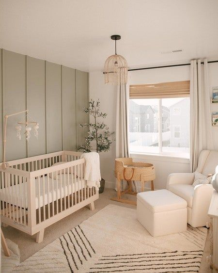
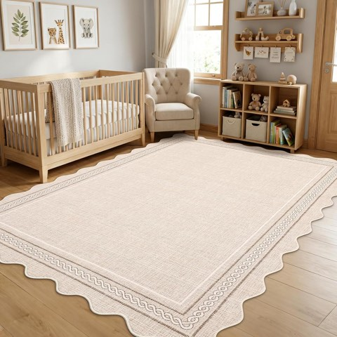
GarveeHome Scalloped Washable 5x7 Area Rugs for Living Room Non Slip, Beige
Shop on AmazonNursery Decor Mistakes I Would Avoid
A beautiful nursery can still become frustrating if the design ignores everyday life.
Here are the mistakes I'd watch for: buying furniture before measuring the room, choosing style over comfort, adding too many decorative objects, ignoring storage, using overly bright lighting, choosing difficult-to-clean textiles, putting decorative objects inside the crib, installing furniture without securing it properly, and creating a theme that feels impossible to update.
You don't need to avoid personality. You just need to give practicality a seat at the decorating table, right alongside whatever color scheme or theme you fall in love with.
How to Arrange Nursery Furniture
Start with the essential furniture rather than decorating first.
Think about the path you'll take when you enter the room at night. Where will you pick up the baby? Where will you change them? Where will you sit?
Keep frequently used items close to the areas where you need them.
The crib should sit in a safe location away from windows, cords, and other hazards. Keep the changing area organized so you can access essentials without stepping away from your baby.
The safest nursery layout will always depend on the specific room, the furniture you own, and whatever current local safety guidance applies to your situation.
How to Make Nursery Decor Feel Expensive
You don't need a huge decorating budget to create a polished nursery.
I've found that consistency makes a room look more expensive than individual expensive pieces.
Choose three or four main colors and repeat them throughout the room. Then mix materials such as wood, cotton, linen, woven fibers, and ceramic accents.
For example, you could build the room around warm white, natural oak, soft beige, and sage green.
That small palette gives you plenty of freedom while keeping the room visually connected.
Another trick involves choosing one focal feature. Maybe you love the wallpaper. Great. Let it shine. You don't need five other statement pieces fighting for attention and competing with it for the eye.
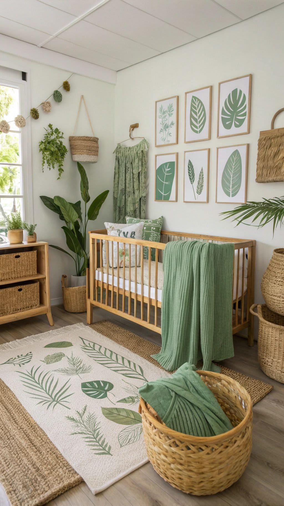
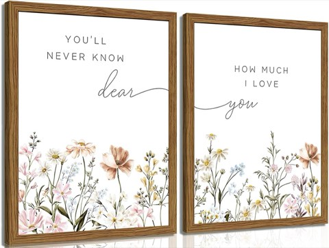
Wood Framed Wildflower Nursery Wall Art Set of 2, Boho Flower Botanical Wall Decor Paintings, Baby Girl Nurseries Pictures Posters Prints for Nursery Baby Room Bedroom Home Decoration 12x16 Inch
Shop on Amazon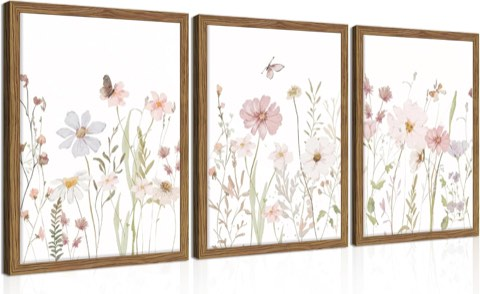
Framed Wildflower Wall Art Set of 3, Pink Floral Canvas Wall Decor Pictures, Vintage Flower Botanical Paintings, Nursery Flowers Butterfly Posters Prints for Bedroom Living Room 12x16 Inch
Shop on Amazon23 Nursery Decor Ideas for a Cozy Baby Room
1. Keep the Nursery Clutter-Free
This might sound obvious, but it makes a huge difference.
Nurseries accumulate stuff incredibly quickly. Clothes, toys, blankets, books, diapers, gifts, and mysterious little objects somehow multiply overnight.
Create dedicated storage from the beginning. Use drawers, baskets, bins, shelves, and closet organizers to keep everyday items easy to find.
A calm-looking nursery doesn't necessarily contain fewer things. It simply gives everything a place.
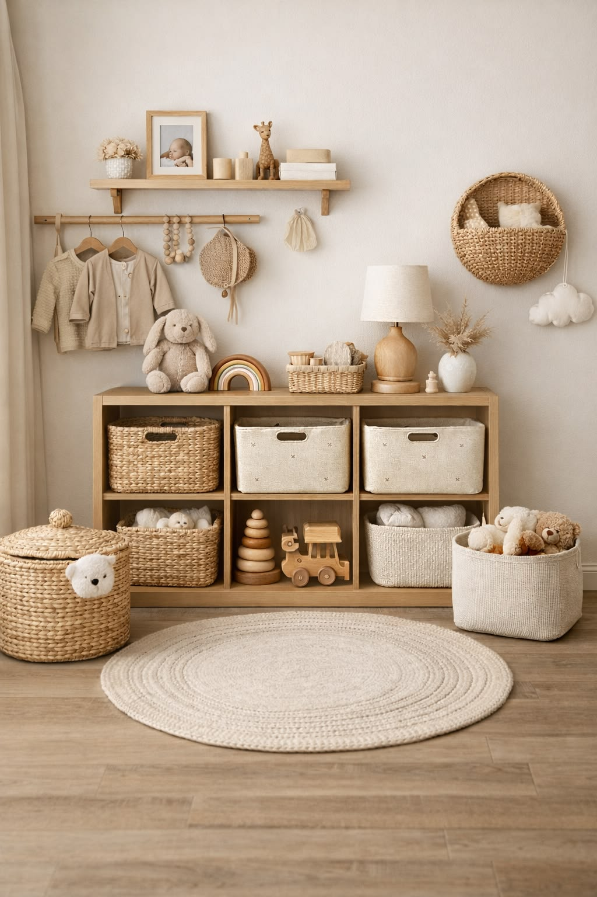
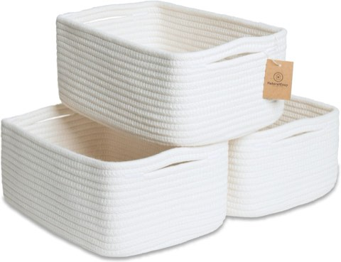
NaturalCozy 11.8"x8"x4.5” Storage Baskets for Shelves 3 Pack | Cotton Rope Woven Small Baskets for Organizing | Small Storage Bins for Nursery, Bathroom, Closet, Cube Shelf, Decorative, Gift Basket
Shop on Amazon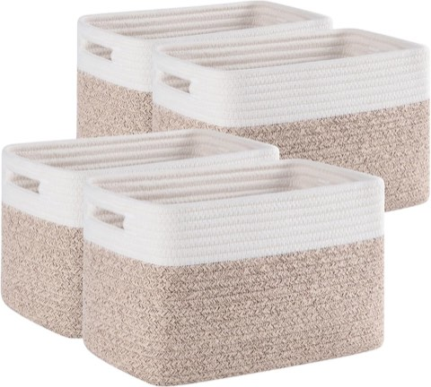
4 Pack Storage Baskets for Organizing, Woven Baskets for Shelves - Perfect for Toys, Books, Towels, and Clothes, Durable Gift Basket Bins Toy Storage, 12.7''Lx9''Wx7.8''H, Brown & White
Shop on Amazon2. Design a Nursery With Room to Grow
One of the smartest nursery decor ideas involves thinking beyond the newborn stage.
Choose furniture and colors that can transition as your child grows.
For example, a simple wooden dresser can work during the baby years and later become regular bedroom storage. A neutral wall color can also accommodate different artwork as your child's interests change.
Buy fewer pieces that work harder.
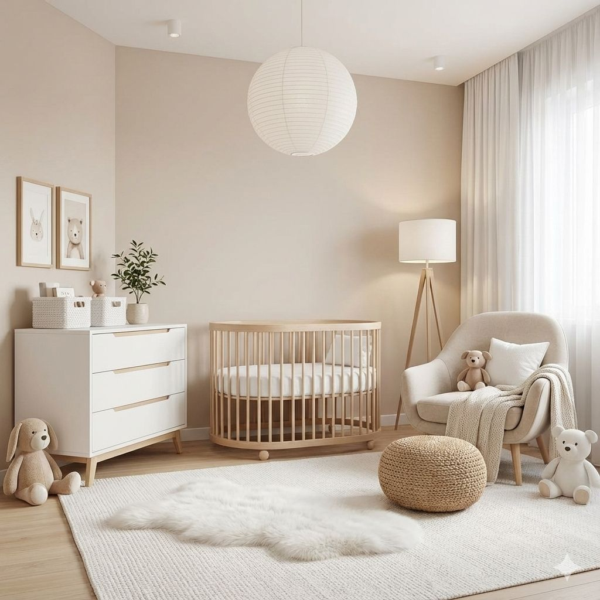
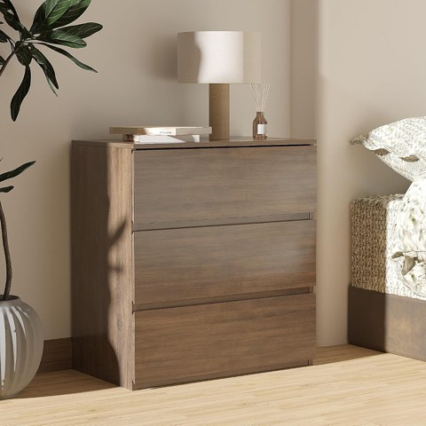
woodtalks 3 Drawer Dresser, Wood Chest Drawers with Storage for Closet, Bedroom, Living Room and Hallway, Drawers Dresser Bedside Nightstand, Walnut, Brown
Shop on Amazon3. Bring Nature Into the Nursery
Nature-inspired decor works beautifully in baby rooms.
Think botanical prints, wooden furniture, animal illustrations, woven textures, and earthy colors.
If you use real plants, choose safe options and keep them completely out of your baby's reach, it's worth keeping any potentially toxic plants well out of reach of children in general.
You can also skip real plants altogether. Botanical artwork gives you the same visual effect without adding another thing to worry about.
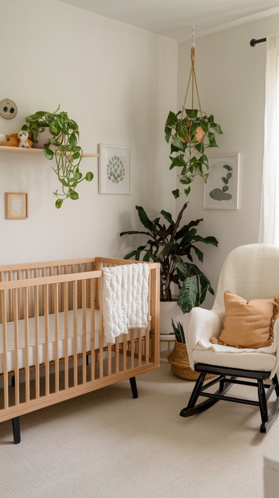
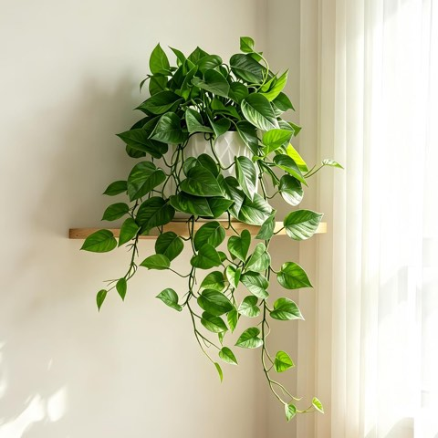
Trailing Artificial Pothos Plant with Ceramic Pot, Potted Faux Greenery with Adjustable Drooping Vines,Fake Houseplant for Home Office High Shelf, Cabinet Top & Vertical Indoor Decor (White Pot)
Shop on Amazon4. Add a Comfortable Nursery Ottoman
An ottoman can make a reading or feeding chair considerably more comfortable.
It can also provide extra seating or, depending on the design, hidden storage.
If space feels tight, choose a compact ottoman instead of a large chair-and-footstool combination.
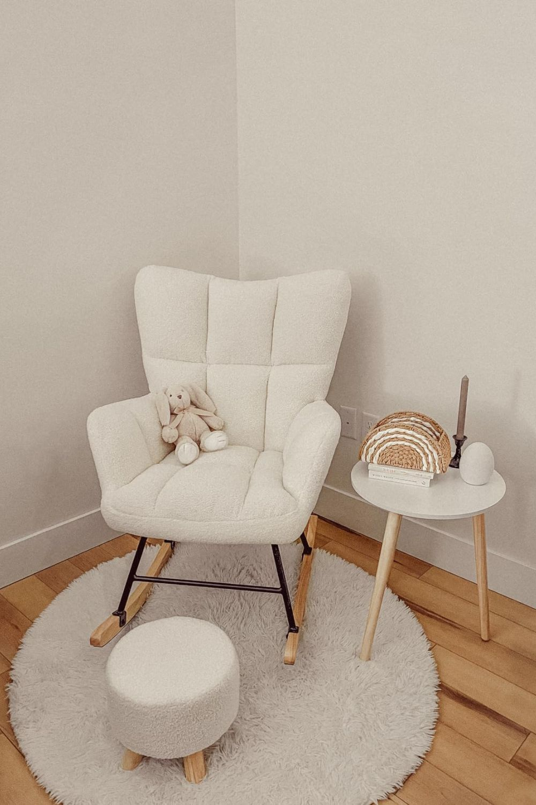
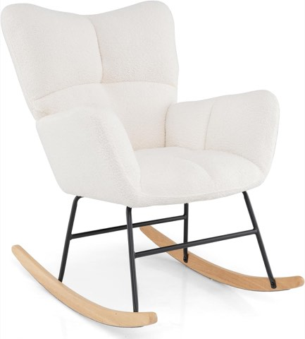
GIANTEX Rocking Chair Nursery, Teddy Upholstered Glider Rocker Chair w/High Backrest, Armrests & Rubber Wood Feet, Modern Sherpa Rocking Accent Chair for Living Room, Bedroom & Office, Beige
Shop on Amazon5. Add Curtains That Soften the Room
Curtains can make a nursery feel much more finished.
Light-filtering curtains can help create a softer atmosphere during daytime naps, while blackout curtains can help control incoming light.
Choose fabrics that complement your main color palette rather than competing with it.
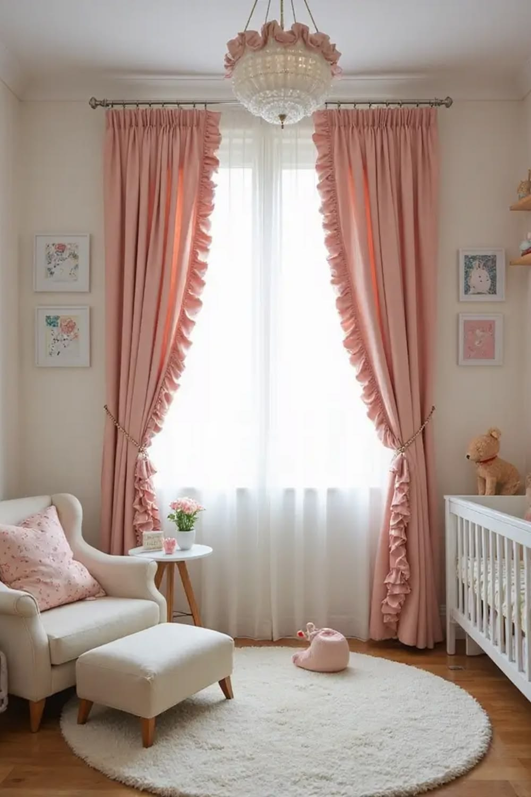
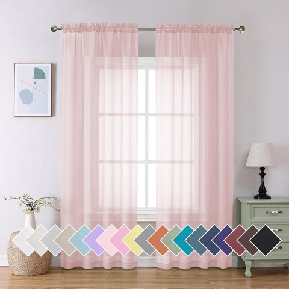
Aiyufeng Blush Pink Sheer Curtains 84 Inches Long 2 Panels Set, Light Filtering Soft Airy Voile Rod Pocket Baby Pink Sheer Window Drapes for Bedroom Living Room, Each 40Wx84L Inches
Shop on Amazon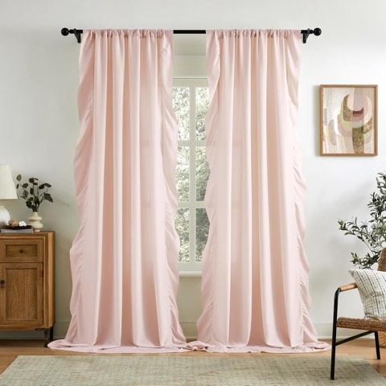
Dusty Pink Ruffle Curtains 84 Inches Long for Bedroom Living Room Rod Pocket Light Filtering Soft Victorian Romantic Ruffle Pleated Curtains for Girls Nursery Room Window Privacy Decor 52x84, Blush
Shop on Amazon6. Create a Simple Nursery Gallery Wall
A gallery wall can add personality without requiring expensive decor.
Choose several pieces that share one visual connection. You might use similar frames, matching colors, or a common theme such as animals or nature.
Keep the arrangement simple and secure every piece properly.
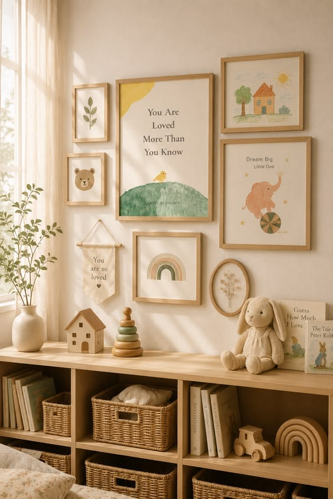
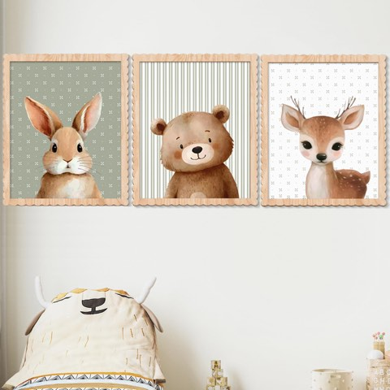
Woodland Animal Nursery Wall Art Decor Set of 3 Wood Framed Wall Prints
Shop on Amazon7. Add a Personalized Nursery Detail
A personalized piece can make the room feel genuinely yours.
Consider a framed name print, family photograph, custom artwork, or handmade decoration.
I prefer using one or two meaningful pieces instead of covering the room with personalized products. Your nursery should feel like a home, not a personalized gift shop.
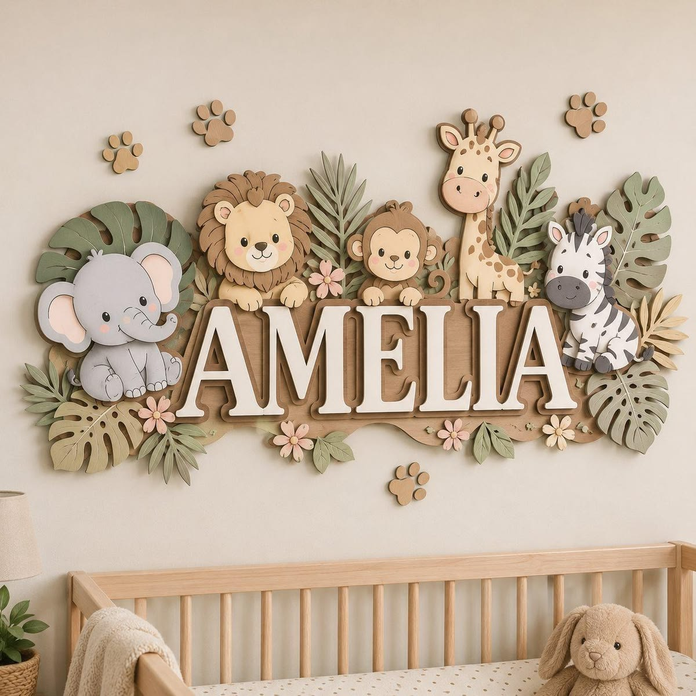
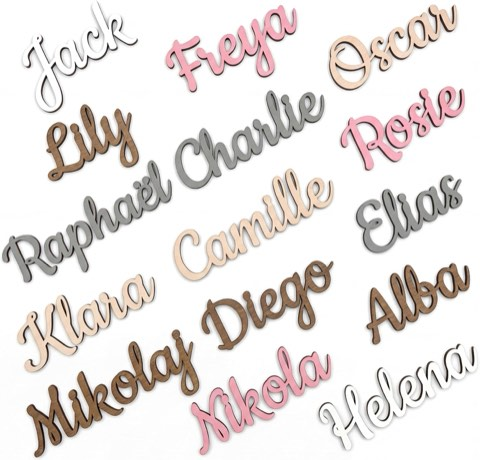
Personalized Wooden Name Signs 10 INCH Small Nursery Wall Decor Custom Kids Room Door Tags Baby Shower Gift Birthday Party Decor Wooden Name Wall Art Custom Baby Name Sign
Shop on Amazon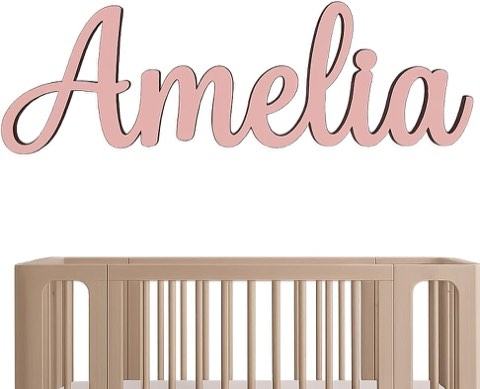
Wooden Name Sign 8-35" Wide Personalized Letters for Nursery Art Wall Room Decor Baby Shower Occasion Family Name Sign Nameplate Wood Plaque
Shop on Amazon8. Decorate With Baskets
Baskets provide one of the easiest ways to combine storage and style.
Use them for extra blankets, toys, books, burp cloths, stuffed animals, and laundry.
Woven baskets work particularly well with neutral nursery designs because they introduce natural texture.
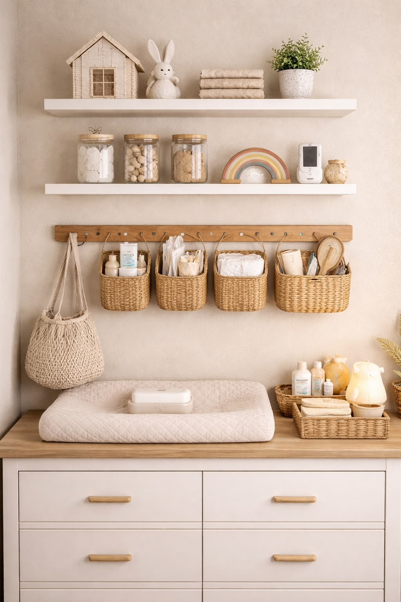

9. Add a Nursery Canopy
A canopy can create a magical focal point around a reading chair or play area.
Use it as a decorative feature outside the crib rather than treating it as part of the baby's sleep environment.
Choose lightweight fabric and secure the installation properly. The goal involves creating atmosphere, not adding unnecessary hazards.
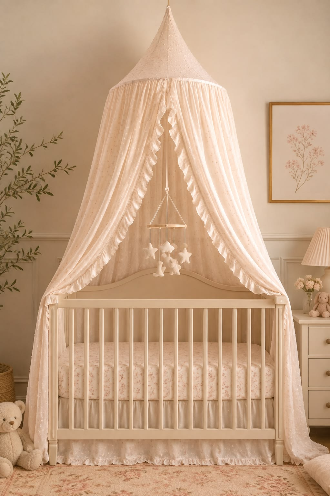
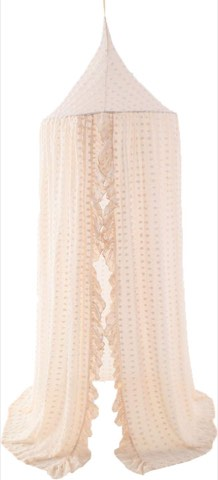
Wonder Space Elegant Kids Bed Canopy - Lace Chiffon Netting with Pom Pom, Princess Girls Fairy Dream Tent, Nursery Room Baby Crib Hanging Curtain Mosquito Net Children Reading Nook Decoration (Beige)
Shop on Amazon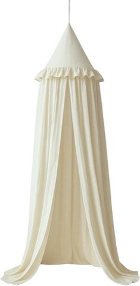
Wonder Space Kids Bed Canopy with Ruffles, Pastel Neutral Color for Boys & Girls, Frilled Cotton Tent Nursery Room Baby Crib Hanging Curtain Mosquito Netting Children Reading Nook Decoration (Ivory)
Shop on Amazon10. Try a Beige and Cream Nursery
A beige and cream nursery creates a soft, timeless foundation.
Use several shades rather than relying on one beige. Combine warm ivory walls with taupe furniture, cream textiles, and slightly darker baskets.
The secret lies in contrast. Without enough variation, a neutral nursery can look flat rather than sophisticated.
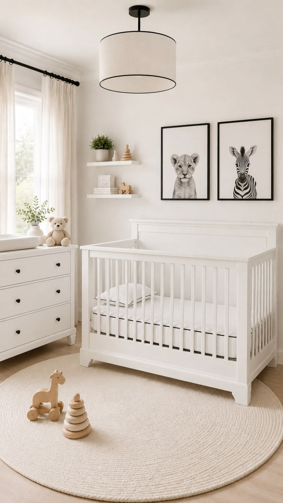
Vintage Baby Lion Wall Art, Safari Nursery Animal Print, Beige And Brown Lion Poster for Room Decor
Shop on AmazonVintage Baby Giraffe Wall Art, Neutral Safari Animal Print, Cream And Tan Giraffe Poster for Room Decor
Shop on Amazon11. Create a Soft Sage Green Nursery
Sage green has become one of my favorite nursery colors because it feels natural without looking overly traditional.
Pair sage walls with cream furniture, natural wood, beige textiles, white curtains, and botanical artwork.
The result feels fresh but still cozy.
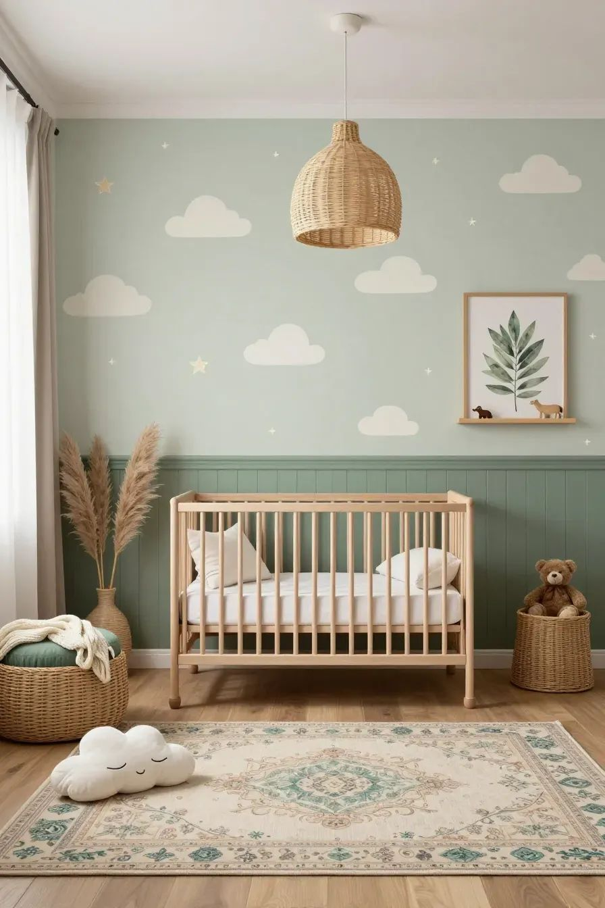
Sage Green Inspirational Floral Pillow Covers 18x18, Wildflower Nursery Decor, How Wonderful Life Is Now You're in the World Decorative Throw Pillow Covers for Kids Room Playroom, Double-Sided
Shop on Amazon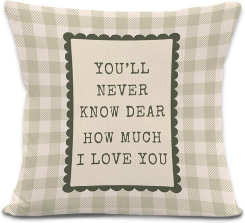
Sage Green Girl Nursery Pillow Covers 18x18 inches, Vintage Nursery Decor Throw Pillow Covers, You'll Never Know Dear How Much I Love You Decorative Pillowcases for Girls Room Bedroom Playroom
Shop on Amazon12. Add a Nursery Night Light
A small night light can make nighttime changes and feeding sessions easier.
Choose warm, gentle lighting rather than an extremely bright blue-white light.
You don't need anything complicated. A simple lamp with adjustable brightness can work beautifully.
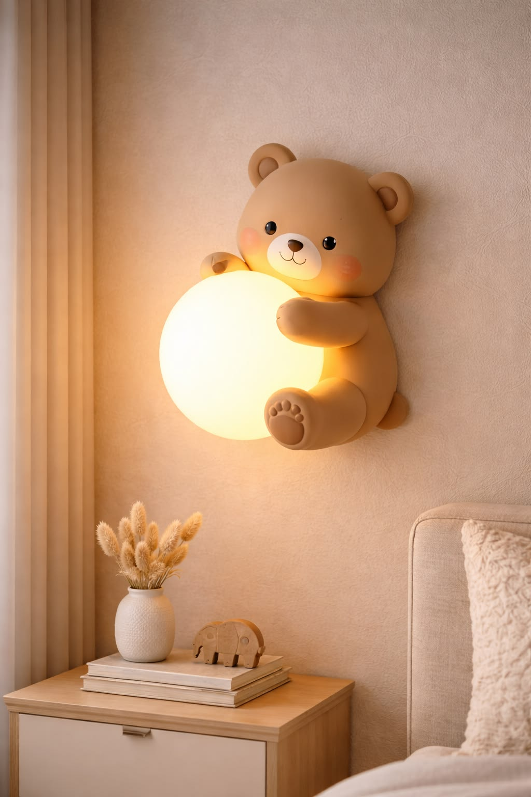
KALEOLI Cloud Night Light 2 Pack for Nursery Decor - Toddler Night Light
Shop on AmazonCloud Light - Floating Cloud Wall Lamp | Baby Nursery Cloud Night Light
Shop on Amazon13. Use Soft Nursery Lighting
Lighting makes a bigger difference than many people expect.
Instead of relying on one bright ceiling light, create layers with ceiling lighting, floor lamps, table lamps, wall sconces, and small night lights.
A dimmable light works particularly well for nighttime routines because you can keep the room softly illuminated without turning on a harsh overhead light.
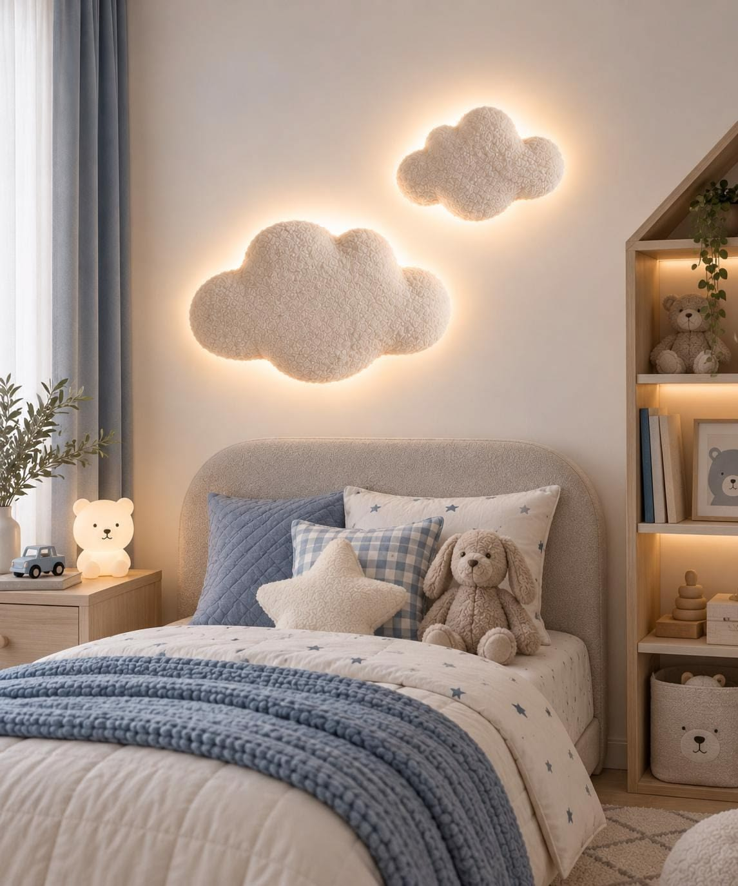
Tip perk Cloud & Moon Lights - Floating Cloud & Moon Wall Lamps
Shop on Amazon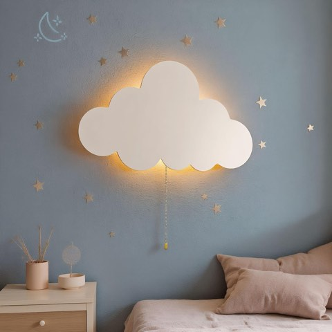
Cloud Light Battery-Operated Wall Lamp for Nursery Kids Bedroom & Baby Room with Pull-String Switch 3V 3000K Warm Night Light Hanging Night Lights (No Charging Needed)
Shop on Amazon14. Layer a Soft Nursery Rug
A rug can instantly make a nursery feel warmer.
Choose a washable or easy-care option if possible. Babies eventually crawl, spill, crawl again, and somehow find the one crumb you thought disappeared three days ago.
A large rug can also visually connect the crib, chair, dresser, and other furniture.
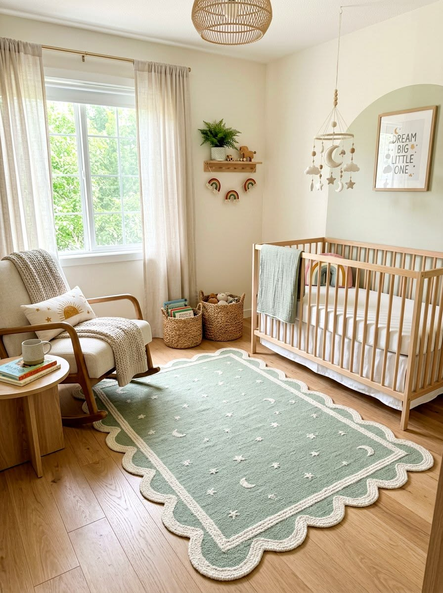
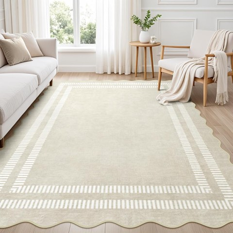
Area Rugs 5x7 Living Room Washable Modern Rug, Neutral Beige Soft Non Slip Rugs Ultra-Thin Indoor Carpet for Bedroom Dining Room Nursery Home Office
Shop on Amazon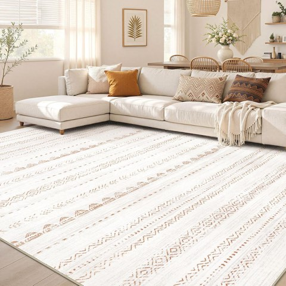
Nakagishi Boho 5x7 Area Rug Living Room Rugs Machine Washable Beige/Brown
Shop on Amazon15. Add a Changing Station That Actually Works
A changing station needs to prioritize convenience.
Keep frequently used items close enough to reach without leaving your baby unattended. Organize diapers, wipes, creams, clothing, and burp cloths into separate containers.
A practical setup might include a changing pad, diaper storage, a wipe container, a clothing drawer, a small laundry basket, and easily accessible cleaning supplies.
Function should win here. Cute baskets mean very little if you can never find anything when you need it.
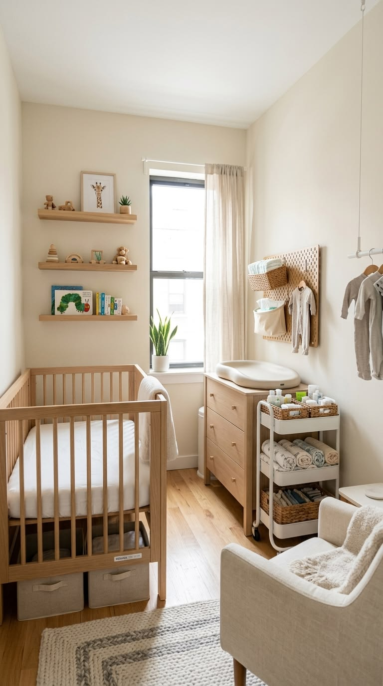
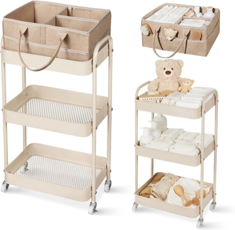
Fortella Baby Diaper Caddy, 3 Tier Rolling Cart for Baby Essentials, Taupe
Shop on Amazon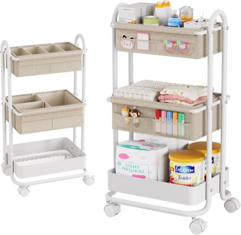
Modanais Baby Diaper Caddy Organizer Cart - 3 Tier Rolling Cart, Off White
Shop on Amazon16. Use a Vintage Nursery Dresser
A vintage-inspired dresser can give a nursery much more character than a matching furniture set.
Look for simple silhouettes, rounded edges, and warm wood tones. If you buy an older piece, inspect it carefully and make sure it meets current safety expectations before using it.
You can also use a new dresser with vintage-inspired hardware if you want the look without the uncertainty of an older piece.
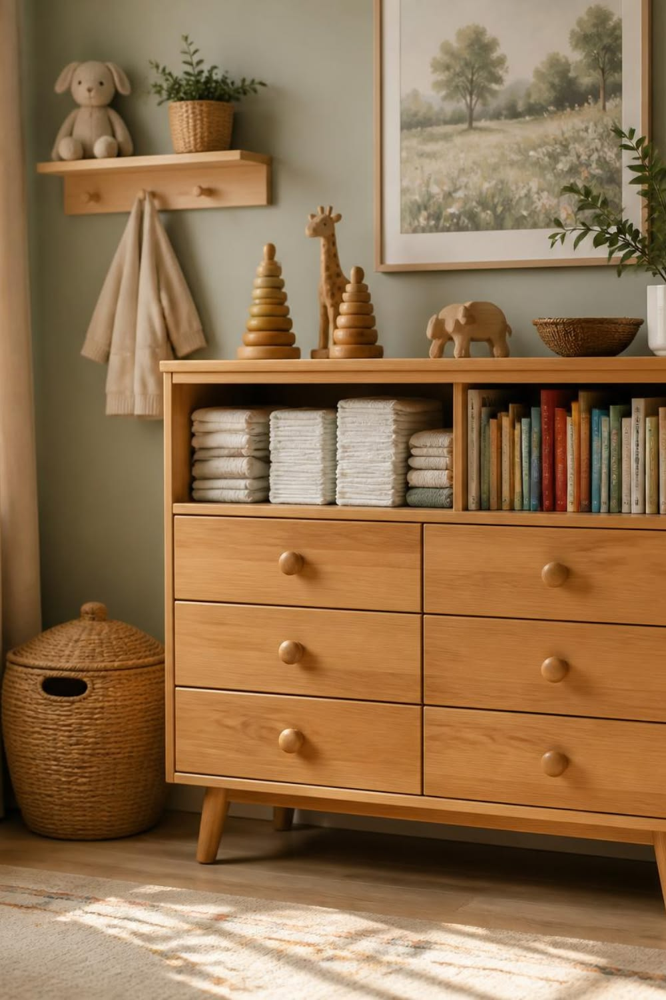
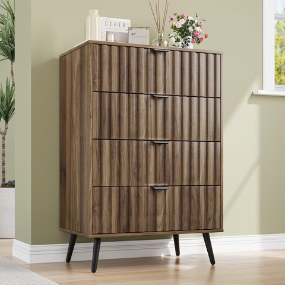
Walnut Fluted 4 Drawers Dresser for Bedroom, Chest of Drawers with Metal Wide Handle, Wooden Dresser for Closet, Bedroom, Living Room, 23.6" x 14.9"D x 30.7" H
Shop on Amazon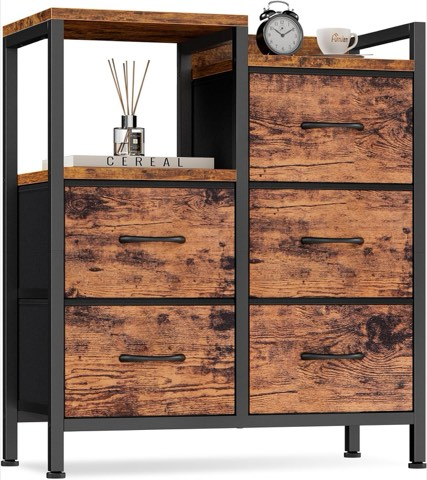
Furnulem Rustic Brown Dressers for Bedroom, 5 Drawer Dresser for Closet
Shop on Amazon17. Choose Natural Wood Nursery Furniture
Natural wood introduces warmth and works with almost every nursery color scheme.
Oak, ash, maple, and light walnut can pair beautifully with cream, beige, sage, blue, or dusty pink.
I especially like natural wood because it doesn't scream "baby furniture." That means you can keep many pieces in the room for years.
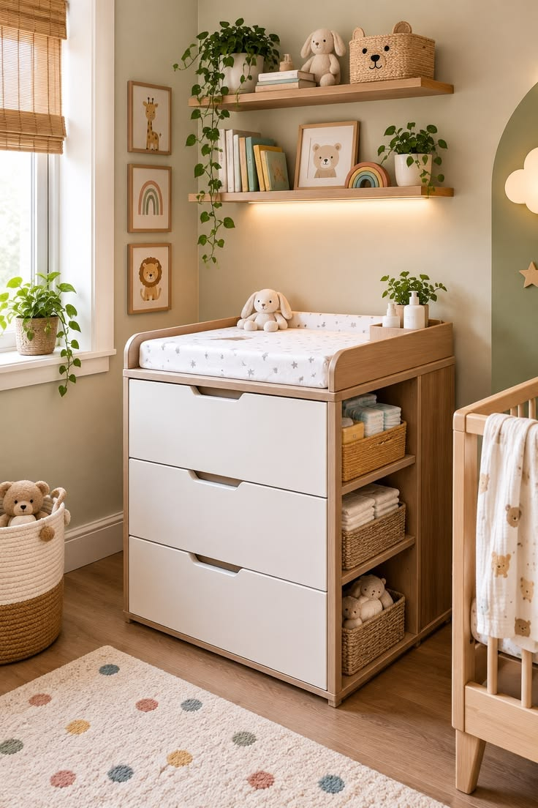
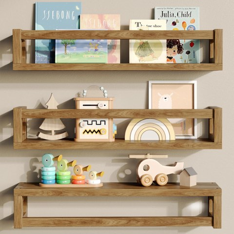
3Pack Nursery Book Shelves, Solid Wood Floatingshelf for Wall, Walnut Brown
Shop on Amazon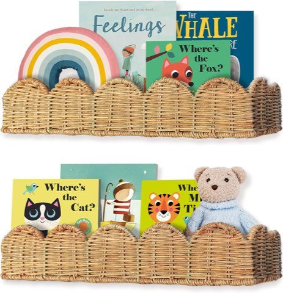
VIVIKA Nursery Book Shelves, Natural Rattan Scalloped, 15.8" W, Set of 2
Shop on Amazon18. Add a Nursery Bookshelf
A small bookshelf can make the room feel finished while encouraging a love of books.
Try a low bookshelf for accessible storage later, or use higher wall-mounted shelves for decorative displays when your baby is young.
Display a mixture of board books, storybooks, framed artwork, small decorative objects, and personalized pieces.
Keep heavier objects securely mounted and avoid placing anything hazardous within your child's reach.
Fixwal Floating Nursery Book Shelves for Wall, 16.5 Inches, Set of 3, White
Shop on Amazonbirola Nursery Shelves with Beads Design - 32 Inches Wall Book Shelves Set of 3, Space-Saving Nursery Book Shelves for Kids Room, Bedroom and Study Room(Natural)
Shop on Amazon19. Create a Cozy Reading Corner
A comfortable reading chair can become one of the hardest-working pieces in the nursery.
Look for a chair with good back support and enough room to hold your baby comfortably. Add a small side table for books, a water bottle, or nighttime essentials.
I'd prioritize comfort over appearance here. A beautiful chair that makes your back miserable at 2 a.m. suddenly looks a lot less impressive.
Rocking Chair Nursery, Upholstered Glider Rocker Cushions Indoor, Comfy Rocking Accent Chair with Armrests, Cozy White Boucle Rocking Armchair for Living Room Bedroom Reading Nook, Adults
Shop on AmazonDelta Children Blair Slim Nursery Glider Swivel Rocker Chair, Cream
Shop on Amazon20. Add Nursery Wall Art
Wall art gives you an easy way to add personality.
Instead of filling every wall, choose a small collection of prints that share a similar color palette. Animal illustrations, botanical prints, abstract shapes, stars, clouds, and simple typography can all work beautifully.
Keep artwork securely mounted and away from areas where your baby can reach it.
Framed Cute Animal Wall Art Nursery Decor Set of 3, Watercolor Elephant Giraffe Lion Canvas, Whimsical Wildlife Pictures Print, Nursery Wall Decor for Kids’ Bedroom Daycare – 16x12 inch
Shop on AmazonBaby Safari Nursery Wall Decor - Set of 3 Pictures Cute Animal Wall Prints on Canvas Jungle Nursery Safari Decor Gifts for Baby Boys and Girls Room, Framed Wall Art 12 x 16 Inch
Shop on Amazon21. Use a Soft Nursery Accent Wall
An accent wall works particularly well behind the crib or changing table.
Choose a muted shade rather than an extremely saturated color. Sage green, dusty blue, warm beige, clay, and muted terracotta can all create visual interest without overpowering the room.
Ever notice how some colorful nurseries still feel incredibly calm? Designers often balance stronger colors with plenty of white, cream, natural wood, or neutral textiles.
Peel and Stick Wallpaper for Nursery Pink Cute Bow Leaf Waterproof
Shop on AmazonBeige Plaid Peel and Stick Wallpaper Removable Checkered Contact Paper, Gingham Self-Adhesive Waterproof Vinyl Roll for Shelf Drawer Liner Bedroom Nursery 17.3"x80"
Shop on Amazon22. Add a Statement Nursery Wall
A statement wall can give the room a focal point without forcing you to decorate every square inch.
You could use removable wallpaper, painted arches, simple geometric shapes, vertical paneling, floral wallpaper, or a soft mural.
I especially like removable wallpaper for nurseries because it lets you experiment without committing to a permanent design.
Pink and White Cream Striped Wallpaper Peel and Stick Girls Nursery Self-Adhesive Removable Waterproof Wallpaper for Bedroom Kitchen Bathroom (Blush, 17.32"x 118.11")
Shop on AmazonPeel and Stick Wallpaper for Nursery Pink Cherry Blossom Waterproof
Shop on Amazon23. Create a Warm Neutral Nursery
Warm beige, ivory, cream, taupe, and soft greige can create a beautiful neutral nursery without making the room feel bland.
Try combining different textures instead of introducing lots of colors. A linen curtain, woven basket, boucle chair, wooden furniture, and textured rug can give a neutral room plenty of depth.
My favorite trick: keep the walls simple and let texture do the decorating.
Boho Cloud Moon Crib Mobile Boho Baby Mobile for Crib Neutral Clouds, Moon & Stars Design Nursery Mobile for Boys & Girls
Shop on Amazonlet's make Boho Baby Crib Mobile for Boys and Girls, Stars, Clouds, Moon
Shop on AmazonHow Do You Choose a Nursery Color Scheme?
Color can completely change how a nursery feels. Soft neutrals, warm whites, muted greens, dusty blues, gentle pinks, and earthy beige tones can create a relaxed atmosphere without making the room look overly themed.
I personally prefer warm neutral nursery colors because they give you more flexibility as your child grows. You can change artwork, bedding, or accessories later without repainting the entire room.
Before choosing paint, look at the room's natural light. A warm beige can look creamy in one nursery and noticeably darker in another.
You should also test paint samples at different times of the day. Why? Because your nursery might look completely different at 8 a.m. compared with 7 p.m.
PANDICORN Stay Cozy Sage Green Pillow Cover 12x20 Inch, Lumbar Pillow Case
Shop on Amazon2 Pack Sage Green Gingham Ruffle Throw Pillow Covers 18''x18''
Shop on AmazonWhat Makes a Good Nursery?
A good nursery needs more than cute furniture. You want a room that supports sleep, feeding, changing, storage, and everyday routines while still feeling warm and personal.
I usually think about nursery design in layers. Start with the essentials, add comfort, then bring in personality through artwork, textiles, lighting, and accessories.
Safety should also influence your decorating decisions. Standard safe-sleep guidance calls for keeping soft objects, loose bedding, and anything that could increase the risk of entrapment, strangulation, or suffocation completely out of an infant's actual sleep space.
That advice matters because nursery decor should never compete with safe sleep practices. Keep decorative elements around the room rather than inside the crib.
Cloud Crib Mobile for Girls & Boys, Boucle Cloud Baby Mobile for Crib Neutral Boho Nursery Mobile, Stars and Moon
Shop on AmazonEERKEOD Baby Crib Mobile Bear Nursery Mobile for Boys Girls Teddy Velvet Mobile Nursery Decor for Infant Bedroom Hanging Baby Mobile for Bassinet Newborn Baby Gift（Brown Bear）
Shop on AmazonFinal Thoughts on Nursery Decor Ideas
The best nursery decor ideas balance beauty, comfort, safety, and practicality. You can create a gorgeous room with warm neutrals, natural wood, soft lighting, thoughtful storage, cozy textiles, and a few personal details.
You also don't need to finish everything at once. Start with the furniture you actually need, establish your color palette, and add decorative pieces gradually.
After all, the nursery doesn't need to look perfect every minute. Real life will quickly add laundry, toys, books, and approximately 47 tiny socks to the room.
And honestly? That's part of the charm.
Choose pieces you love, make the room practical for your daily routine, and leave enough flexibility for your child to grow into the space. A beautiful nursery should feel like a cozy part of your home, not a museum exhibit.